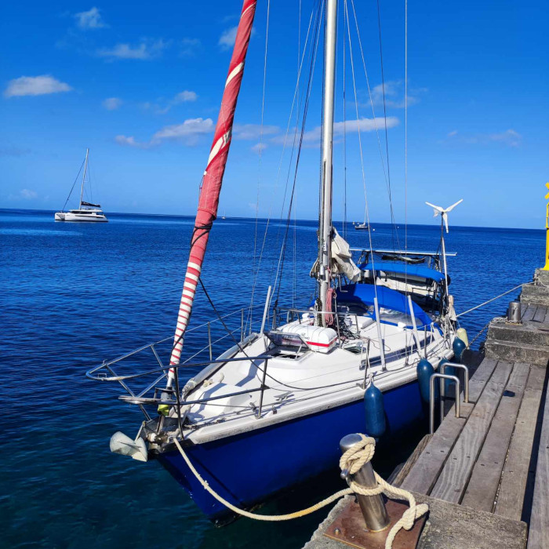

<div style="height: 600px; overflow-y: scroll;">
    <div class="tab" style="margin-top: 30px; margin-bottom: 10px; display: grid; grid-template-columns: auto auto auto auto auto auto auto auto auto auto auto;"> <!-- TODO Improve the grid-template... -->
        <button class="tablinks tab-active" onclick="openTab(event, 'nomadict-01');" title="Sommaire">Summary</button>
        <button class="tablinks" onclick="openTab(event, 'nomadict-02');">Pictures</button>
        <button class="tablinks" onclick="openTab(event, 'nomadict-03');">Contact</button>
    </div>

    <div style="height: 500px; overflow-y: scroll;">
        <div id="nomadict-01" class="tab-section" style="display: block;">
            <div style="display: grid; grid-template-columns: auto auto;">
                
                <div style="padding: 14px;">
                    <h2>Nomadict</h2>
                    Gin Fizz, based in Concarneau<br/>
                    <ul>
                        <li>Refit being discussed in Concarneau, shipyard IDB Marine</li>
                    </ul>
                </div>
            </div>
            <div>
                <h2>The boat</h2>
                <ul>
                    <li>LOA 11.30m</li>
                    <li>BOA 3.76m</li>
                    <li>Draft 1.90m</li>
                    <li>Displacement 7t</li>
                    <li>Aluminium mast</li>
                    <li>Reinforced speaders (professionally don in 2021)</li>
                    <li>Running and staying rigs redone in 2021</li>
                    <li>Full batten main, 3 reefs, with lazy jacks, good shape</li>
                    <li>Genoa on furler (Profurl), good shape</li>
                    <li>Staysail (storm shape), reefable, on releasable inner stay, very good shape</li>
                    <li>Storm jib, tired</li>
                    <li>Spinnaker, good shape</li>
                    <li>GPS tracker Garmin, with depth sounder and MHU</li>
                    <li>Fixed VHF and radar</li>
                    <li>Auto Pilot ST7000</li>
                    <li>Engine Nanni 43HP, 3800 hours, runs perfectly, starts like clockwork</li>
                    <li>Diesel tank 150L</li>
                    <li>New liferaft, May 2023</li>
                    <li>2 new automatic life jackets, one to review</li>
                    <li>Phoscar and horse-shoe life buoy</li>
                    <li>Anchor Delta with 40m of chain and line</li>
                    <li>Secondary anchor with 20m of chain</li>
                    <li>Electric windlass</li>
                    <li>Zodiac tender, inflatable floor</li>
                    <li>1 fore cabin</li>
                    <li>1 aft cabin</li>
                    <li>3 berths in salon</li>
                    <li>1 navigator berth</li>
                    <li>Galley with stove and oven, fridge, sink and sea water pump</li>
                    <li>300L fesh water</li>
                    <li>Big chart table</li>
                    <li>Hood and bimini top</li>
                    <li>2 solar panels 210W aft</li>
                    <li>Wind generator (to balance)</li>
                    <li>2 service batteries</li>
                    <li>1 engine battery</li>
                </ul>
            </div>
        </div>

        <div id="nomadict-02" class="tab-section" style="display: none; background: black; padding-top: 10px;">
            <slide-show id="nomadict-slide-show"
                        width="780"
                        height="400"
                        style="line-height: 1em;">
                <slide-show-image src="./images/boats/nomadict/nomadict.01.jpg" title="Nomadict - 1"></slide-show-image>
                <slide-show-image src="./images/boats/nomadict/nomadict.02.jpg" title="Nomadict - 2"></slide-show-image>
                <slide-show-image src="./images/boats/nomadict/nomadict.03.jpg" title="Nomadict - 3"></slide-show-image>
                <slide-show-image src="./images/boats/nomadict/nomadict.04.jpg" title="Nomadict - 4"></slide-show-image>
                <slide-show-image src="./images/boats/nomadict/nomadict.05.jpg" title="Nomadict - 5"></slide-show-image>
                <slide-show-image src="./images/boats/nomadict/nomadict.06.jpg" title="Nomadict - 6"></slide-show-image>
                <slide-show-image src="./images/boats/nomadict/nomadict.07.jpg" title="Nomadict - 7"></slide-show-image>
                <slide-show-image src="./images/boats/nomadict/nomadict.08.jpg" title="Nomadict - 8"></slide-show-image>
                <slide-show-image src="./images/boats/nomadict/nomadict.09.jpg" title="Nomadict - 9"></slide-show-image>
            </slide-show>
        </div>

        <div id="nomadict-03" class="tab-section" style="display: none;">
            <h2>More info...</h2>
            Referent: Pierre-Jean Jannin.<br/>
            Email: contact@passeurdecoute.fr
        </div>
    </div>
</div>